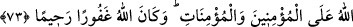

(Fussılet, 41/11) dedikleri bildirilmektedir. İnsan ise hayat sahibi olmasına, aklının
kemâline ve mükellef olmaya elverişli olmasına rağmen, Allâh’ın emir ve yasaklarına
boyun eğme konusunda onun hâli, bu cansız varlıkların hâli gibi kendisine yaraşır ve
lâyık bir şekilde değildir. Bilakis insan bu emâneti yüklenip edâ etmekten imtinâ
etmiştir. Bundan dolayı da emâneti edâ etmediği için zâlim olarak, saâdet yolunu
şaşırdığı için de câhil olarak vasfedilmiştir.
Şu halde bu temsilde bu büyük cisimlerin (gökler, yer ve dağlar) var edilme ve
yaratılma konusunda Allâh’ın iradesine boyun eğmeleri; itâatkâr, emre imtisal etmekten
geri kalmayan bir memurun hâline benzetilmiştir. Öyleyse buradaki yüklenme, mecazdır.
Önceki temsilde ise hakîkati üzeredir. Bu mânâda atıf harfi ile birlikte ma‘tûfun hazfi
yoktur. Emâneti yüklenmenin, emânete hıyânet ve onu zayi etmek mânâsında olduğu
durum ise bunun aksinedir. Çünkü o zaman kastedilen mânâ ‘İnsan emâneti yüklendi,
sonra yüklendiği bu emânete ihânet etti’ demek olur. Böylece “Doğrusu o çok zâlim,
çok câhildir” sözüyle ifâde edilen gerekçe sahih olur. Bu konuyu böyle bil. Söz
Hazâmi’nin söylediği sözdür.
el-Es’iletü’l-müfhıme’de der ki: “Allah insanın çok zâlim ve çok câhil olduğunu
bildiği halde nasıl oldu da emâneti insana teklif etti?” denilirse şöyle cevap verilebilir:
Bu soru uzunca izaha muhtaç bir sorudur. Çünkü Allah Teâlâ, insanların bazılarının îman
edip bazılarının inkâr edeceğini ezelî ilminde bildiği halde tüm insanlara müjdeleyici
ve uyarıcı elçiler gönderip onları îmana dâvet etmiştir. Îman ve inkâr konusunda
insanların halleri değişik olmasına rağmen hitap hepsine umûmidir. Buradaki emânetin
teklif edilmesi de bu kabilden ve bu yoldandır. Çünkü Allah mutlak olarak bütün
varlıkların (a‘yân) öz ve eserlerin mâlikidir.
İbn Abbas (r.a.) şöyle demiştir: “İnsan emânet hakkında çok zâlim, yaptığı hıyânet
sebebiyle de çok câhildir.” Yâni bu hıyânet kasden ve bilerek değil, bilakis cehâletten
ve yanılmaktandır. Tıpkı Hz. Âdem hakkında “Ne var ki o unuttu. Onda azim de
bulmadık.” (Tâhâ, 20/115) buyrulduğu gibi. Yanılma ve unutma affedilmiştir. Bazı
yerlerde cehâlet ve bilgisizlik de mâzur görülür.
İlâhımız! Sen bize sana lâyık olan muâmelede bulun. Bize lâyık olanı yapma.
Şeyh Sa‘dî der ki:
Kâbe kapısına yapışmış bir dilenci gördüm,
Gözyaşı döküyor, şöyle yalvarıyordu:
“Ben, ibâdetlerimi kabul et demiyorum;
Günahlarım üzerine af kalemini çekiver.”